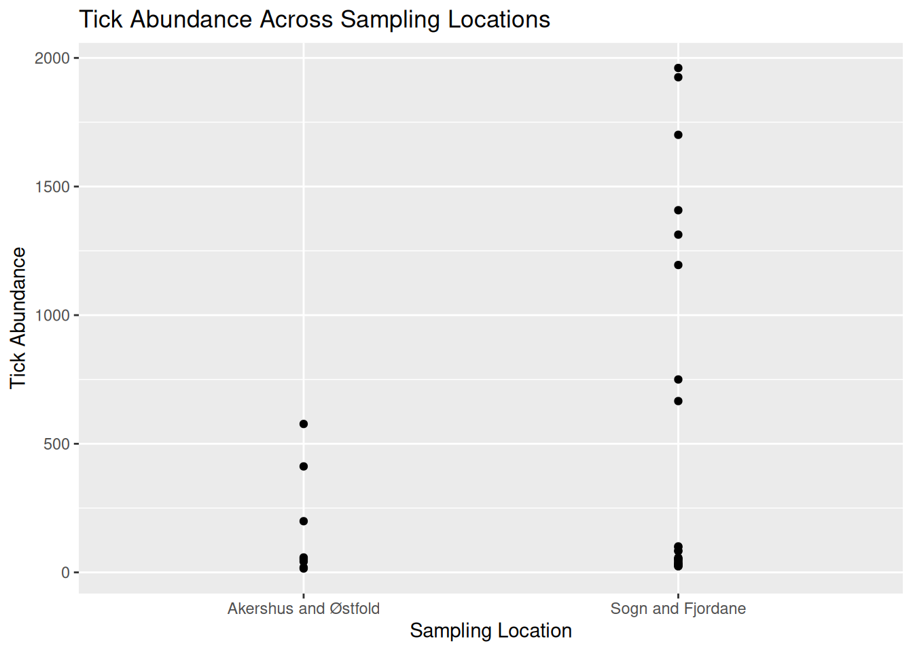

2 Pre- Live Session Content
link to optional recap of linear models and basic plots
2.1 Commonly Used Visualisations for VBD Data
Different types of data need different types of visualisations.
Choosing the appropriate plot to best represent your data is important to communicate your data and the proposed patterns clearly and accurately.
In VBD research, common visualisations you might come across include:
- Scatter plots - useful to explore relationships between variables.
- Boxplots - useful to compare distributions between groups.
- Line plots - useful to visualise trends over time.
- Bar plots - useful to compare values between groups.
- Maps - useful to show spatial patterns.
In vector surveillance research, one of the most useful and frequently used visualisations is abundance plots. These can be used to show how vector counts change over time or across locations.
Abundance plots typically use lines to communicate overall trends in vector populations. However, points can also be used to show individual observations within the dataset. This can be particularly useful during exploratory analysis as it allows us to visualise variation in the data and identify outliers.
Throughout this training, we will focus on developing effective abundance plots with real VBD datasets. We will start with simple exploratory abundance plots in this Pre- Live Session content, and build more complex abundance plots during the Live Session.
2.2 What can Visualisations Tell Us About Data?
Effective visualisations can help us to communicate complex datasets by quickly identifying distributions and patterns in the data that can be unclear from dataframes alone.
Visualising data can help us to identify:
- Distribution of data - how values are spread across a dataset, including the spatial distribution of vectors or pathogens.
- Correlative relationships - potential associations between multiple variables, such as vector populations and environmental factors.
- Temporal trends - variable changes over time, for example, vector abundance over time.
- Inter-group comparisons - differences between groups, for instance, vector species across regions.
- Outliers or anomalies - unexpected observations that may suggest errors to be addressed before modelling.
Given how much information we can extract from them, visualisations are often the first step in exploratory data analysis before further statistical modelling.
2.2.1 Task 1: Visualising Tick Abundance Across Locations
Let’s try visualising some VBD data. First, download tick_dataset_wrangled.csv and open it in RStudio:
tick_data <- read.csv("tick_dataset_wrangled.csv")
tick_dataThis dataset contains tick abundance, sample_value, across two sampling locations, sample_location.
Where most people make mistakes: Remember to save tick_dataset_wrangled.csv to an appropriate working directory and set your working directory correctly in RStudio!
We can plot this data to visualise the difference in abundance across the two sample locations. You might typically see bar plots used to visualise abundance across two groups, but here we will use a scatter plot to show individual observations, which allows us to assess variation and identify potential outliers in the dataset.
To do this, we will use the ggplot2 package. ggplot2 is one of the most commonly used packages for visualisations and graphics, so it is useful for you to understand how to code with this package. It is particularly good to build plots step-by-step by defining:
- The dataset we want to use.
- The variables we want to visualise.
- The type of plot we want to generate.
Run this code to generate a simple abundance plot of tick_data using points to show individual observations:
library("ggplot2")
tick_abundance_location <- ggplot(tick_data, aes(x = sample_location, y = sample_value)) +
geom_point() +
labs(
x = "Sampling Location",
y = "Tick Abundance",
title = "Tick Abundance Across Sampling Locations"
)
tick_abundance_locationYou should now see a simple abundance plot in the “Plot” window of RStudio, which looks like this:
tick_abundance_location
Tip: Using ggplot2 to code visualisations can look heavy, but what we are doing is breaking down each step of the plot like building blocks. Let’s have a closer look:
ggplot(tick_data, aes(x = sample_location, y = sample_value))
tick_data is the dataset we want to visualise.
aes() represents aesthetics, including which variables from the dataset we want to visualise. For this plot:
x = sample_location tells R to place sampling location on the x-axis.
y = sample_value tells R to place tick abundance on the y-axis.
geom_point()
Tells R to plot a point for each observation in the dataset. For this data, one observation is the tick count per sample collected at a particular location. We would change this if we wanted to use a line plot.
labs(
x = "Sampling Location",
y = "Tick Abundance",
title = "Tick Abundance Across Sampling Locations"
)The labs() function simply adds labels to the visualisation to make it easier to interpret. For this plot, we have added an x-axis label, a y-axis label, and a title for the plot.
It is a good idea to save your visualisations so you can easily refer back to them when you need. There are several ways to save visualisations in R, but it is good practice to use code:
ggsave("tick_abundance_location.png", plot = tick_abundance_location)
Now that we have visualised the data, we identify patterns and extract information about the dataset.
From the visualisation, we can see:
- Tick abundance appears to be greater in Sogn and Fjordane than in Akershus and Østfold.
- Most observations across both locations show relatively low tick abundance, with a small number of samples showing much higher values.
- Sogn and Fjordane has more samples than Akershus and Østfold, suggesting a potential bias in sampling effort. This is something which may need to be addressed when running further analysis.
- Although some Sogn and Fjordane samples include very high tick counts, these values are spread across several observations, suggesting genuine variation in the data rather than single outliers.
2.2.2 Task 2: Visualising Mosquito Abundance Over Time
Let’s try another visualisation, this time plotting vector abundance over time. Visualising data across time can help us identify temporal trends, seasonal patterns, and periods of unusually high or low abundance.
Download the mosquito_monthly_2023_subset.csv dataset and open in RStudio:
mosquito_monthly_data <- read.csv("mosquito_monthly_2023_subset.csv")
mosquito_monthly_dataNow, let’s visualise the data using another simple abundance plot using points to show individual observations:
mosquito_abundance_monthly <- ggplot(mosquito_monthly_data, aes(x = month, y = sample_value)) +
geom_point() +
labs(
x = "Month",
y = "Mosquito Abundance",
title = "Monthly Mosquito Abundance Across 2023"
)
mosquito_abundance_monthlyYou should now see a new simple abundance plot in the “Plot” window of RStudio, which looks like this:
mosquito_abundance_monthly
Don’t forget to save your plot:
ggsave("mosquito_abundance_monthly.png", plot = mosquito_abundance_monthly)
Now it’s your turn to have a go at identifying patterns and information about the dataset from this new visualisation, as we did in Task 1. Please record your answers in the Response Form at the end of the Pre- Live Session content.
Tip: Consider these prompts if you need some additional guidance:
- Can you observe any potential temporal or seasonal trends?
- How is the data distributed? Are abundance counts spread or clustered?
- Can you make comparisons between the different months?
- Are there any potential anomalies in the dataset?
2.3 Formulating Hypotheses From Visualisations
Now that we know what patterns can be drawn from data visualisations, we can begin to develop hypotheses on the mechanisms and processes that might explain these patterns.
A hypothesis is a testable explanation for an observed pattern.
For example, if we visualised a dataset on Culicoides abundance over time and observed a pattern showing higher Culicoides counts during the summer months, we might suggest the following hypothesis: “Higher temperatures during summer provide optimal conditions for Culicoides larval development, leading to increased abundance during this season.”
Similarly, if we plotted a dataset on sandfly abundance across different habitat types and observed a pattern indicating higher sandfly counts in peri-domestic habitats, we might suggest this hypothesis: “Peri-domestic environments increase sandfly abundance by providing suitable breeding habitats, such as organic waste from cattle sheds.”
From these examples, we can understand how visualisations can help to generate data-driven research questions and hypotheses.
Important: Remember, data visualisations alone do not show causation. They can be used as a tool to highlight potential patterns that should be tested using further statistical analysis.
2.3.1 Task 3: Formulating Hypotheses from Data Visualisations
Have another look at the visualisations you generated in Tasks 1 and 2, and consider the patterns we observed in the data.
What biological, environmental, or other factors might explain these patterns?
Write one possible hypothesis for each visualisation that could be tested using further analysis (you do not need to run further analysis for this workshop).
Please record your answers in the Response Form at the end of the Pre- Live Session content.
2.4 Response Form
Please complete this Response Form after finishing the tasks above.
This form is anonymous and is not an assessment. Your responses will help us to understand which areas may require more support during the Live Session. We aim to tailor the content to the group’s needs, so you gain the most from this workshop.
2.5 Conclusion & Preparation for Live Session
Ahead of the live session, ensure you keep R and RStudio installed on your device, as well as the packages we prepared earlier.
Please make sure you have Teams set up on your device and that your microphone is working. We will aim to send the link 48 hours before the live session. Please be aware that the live session will be recorded.